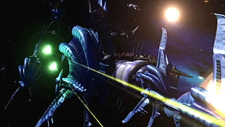
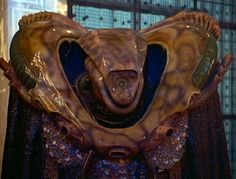

It was the dawn of the third age of mankind, ten years after the Earth-Minbari war. The Babylon project was dream given form. Its goal: To prevent another war by creating a place where humans and aliens could work out their differences peacefully. It's a port of call; home away from home for diplomats, hustlers, entrepreneurs, and wanders. Humans and aliens wrapped in two million five hundred thousand tons of spinning metal, all alone in the night. It can be a dangerous place, but it's our last best hope for peace. This is the story of last of the Babylon stations. The year is 2258. The name of the place is Babylon 5.